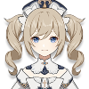
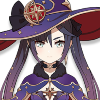
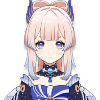
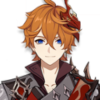
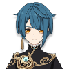

Hydro

Barbara
She is the deaconess of the Church of Favonius and a self-proclaimed "idol" after learning about them from the intrepid adventurer Alice. She is also the daughter of Frederica Gunnhildr and Seamus Pegg, and the younger sister of Jean. Through Frederica she is a descendant of the prestigious Gunnhildr Clan.

Mona
An astrologist of great skill and equally-great pride, Mona has taken up residence in Mondstadt to avoid incurring the wrath of her master after unwittingly reading the latter's diary.

Sangonomiya Kokomi
The young Divine Priestess of Watatsumi Island and a descendant of the Sangonomiya Clan. Kokomi is in charge of most of Watatsumi's affairs, shouldering heavy responsibilities alone in hopes for giving Watatsumi Island's people the hopes and happiness that they desire.

Tartaglia
He is the Eleventh of the Fatui Harbingers. Following danger wherever he goes, Childe is always eager for a challenge, making him extremely dangerous despite being the youngest member.

Xingqiu
He is the second son of the Guild Manager of the Feiyun Commerce Guild, an influential group in Liyue, and is also a self-proclaimed practitioner of the Guhua Clan's arts.